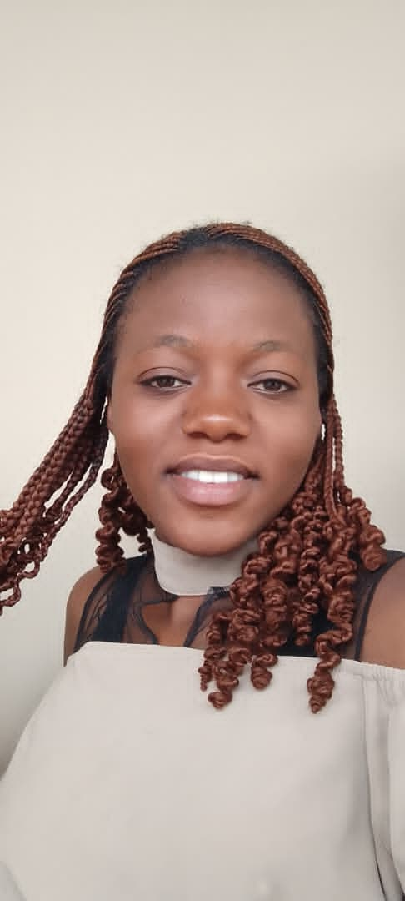

A Propos de Moi
bonjour! je m'appelle EDWIGE et je suis une etudiante dynamique et motivée en informatique à l'UDBL. passionné par le dévellopement web, l'intelligence artificielle , et le design graphique, je suis constamment à la recherche de nouvelles opportunités d'apprentissage et de defis stimulants
au cours de mes études, j'ai devellopé de solides competences en programmation. je suis une personne rigoureuse, créative et j'aime travailler en équipe pour atteindre des objectifs communs. Mon objectif est de contribuer à des projets innovants, trouver un stage, et maitriser le framework laravel.
Mes Compétences
| CATEGORIE | COMPETENCES | NIVEAU |
|---|---|---|
| programmation | HTML,CSS,Javacript,Python | Avancé |
| design | Figma,Photoshop(base) | intermediaire |
| langues | Francais(natif)Anglais(fluide) | Avancé |
| OutilS | Git,VScode,Suite Office | Avancé |
| Sotf skills | communication,résolution de probleme,Autonomie | Expert |